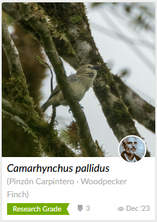
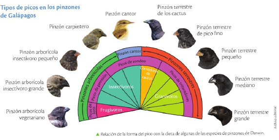
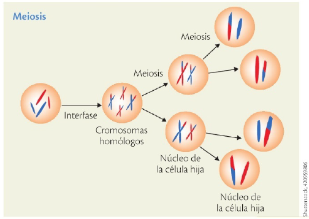
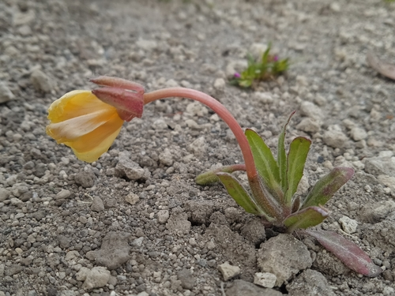
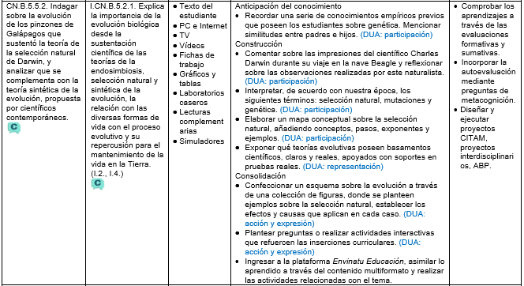

Los pinzones de Galápagos y la selección natural
CN.B.5.5.2. Indagar sobre la evolución de los pinzones de Galápagos que sustentó la teoría de la selección natural de Darwin, y analizar que se complementa con la teoría sintética de la evolución, propuesta por científicos contemporáneos.

Imagina por un momento que viajas en el tiempo y llegas a las Islas Galápagos, hace millones de años. Allí, un pequeño grupo de aves llega desde el continente… y de ese grupo surge toda una diversidad de pinzones, cada uno adaptado a su propio entorno.
Antes de avanzar, te pregunto: ¿Qué significa para ti ‘selección natural’? ¿Cómo crees que una sola especie puede transformarse en muchas? Hoy exploraremos estas preguntas, despertando nuestra curiosidad y preparándonos para descubrir los secretos que la naturaleza ha guardado durante millones de años.
Las aves que cambiaron el curso de la biología
En su visita a las islas Galápagos, Darwin se quedó fascinado al observar que cada una de las trece islas principales tenía su fauna peculiar, y de entre todos los grupos, unas aves pequeñas fueron las que más le llamaron la atención por su ligero parecido con los pinzones de Sudamérica continental. Sin embargo, estas aves no solo tenían rasgos particulares en cada isla, sino también una forma de vida y de alimentación diferente.
Los pinzones generalmente son aves de hábitos terrestres que se alimentan principalmente de semillas que encuentran entre las hierbas y que complementan con insectos. En las Galápagos había especies terrestres, pero también otras que preferían estar en medio de los arbustos, alimentarse principalmente de insectos o incluso de frutas. La primera correlación que Darwin hizo fue la de su dieta con la forma de su pico.
Ya en Londres, Darwin recibió la noticia que con el tiempo lo llevaría a sentar las bases de la teoría de la selección natural: Owen confirmó que todas esas aves pertenecían al grupo de los pinzones.
La hipótesis que Darwin fue desarrollando establecía que, de algún modo, todas estas especies descendían de la especie continental, y al llegar a islas diferentes, tuvieron que adaptarse para aprovechar los diversos recursos que su nuevo hábitat ofrecía. Con el tiempo, y por efecto de la selección natural, sus características físicas también divergieron.

Tipos de picos en los pinzones de Galápagos

La selección natural explicada con ayuda de la genética
En la lección anterior se enunciaron los cuatro principios de la selección natural. A continuación analizaremos cómo se producen:
Las variaciones que se producen en las características de cada individuo que forma parte de una población son resultado de la mutación de los genes y de la recombinación que experimentan los cromosomas durante la meiosis, división celular en la que se forman las células sexuales (gametos).
La transmisión de estas variaciones de padres a hijos sucede cuando estos genes diferentes se heredan.
Cuando las poblaciones naturales cuentan con suficientes recursos, tienen la tendencia a reproducirse y crecer de tal manera que, en algún momento, los recursos no son suficientes. Entonces se establece una lucha por la supervivencia.
Si las características heredadas permiten que la descendencia sea más eficiente en la lucha por la supervivencia (ya sea porque se adapta mejor al medio, porque es más atractiva para sus parejas, porque puede evadir mejor a los depredadores o porque tiene una mayor tasa de supervivencia), en las sucesivas generaciones estas características serán más frecuentes y, eventualmente, podrían hasta producir una especie diferente a la original.


Antes de avanzar, explica: ¿cuál es la relación entre la geografía, la ecología y la evolución?
El aporte de otras ciencias para la comprensión de la evolución
Si bien la genética proporcionó la explicación a nivel molecular de cómo se producen los cambios que posibilitan la evolución, el desarrollo de otras ciencias, en paralelo, también fue fundamental para que la evolución haya dejado de ser una teoría difusa.
La paleontología produce, constantemente, nuevos hallazgos que permiten ir llenando los espacios vacíos en el conocimiento de los seres que vivieron en determinada época histórica y su relación con los actuales, o ir enmendando conjeturas equivocadas.
Por su parte, el estudio del desarrollo de los embriones tempranos de diversos grupos de animales revela tantas similitudes, que el planteamiento de un ancestro común es la deducción lógica. A esto se suma la anatomía comparada, que proporciona evidencias de órganos que tienen una historia común o que han diferido, de acuerdo con alguna adaptación al medio, que los hace más eficientes.
Los aportes más irrefutables provienen del campo de la bioquímica y de la biología molecular, pues el estudio de la manifestación genética en forma de proteínas y compuestos químicos de diferentes especies permite estimar, sin lugar a dudas, su nivel de relación evolutiva. Con esto, incluso se ha logrado revisar las clasificaciones taxonómicas que se basaban en rasgos físicos o ecológicos y reconocer muchas subespecies que habían pasado desapercibidas. Todas estas pruebas son las que enriquecen la teoría de la síntesis evolutiva del genetista ruso Theodosius Dobzhansky (1900-1975).
Las incertidumbres que persisten
Si bien a estas alturas del conocimiento científico dudar de que la evolución ha ocurrido es producto de la desinformación, por decir lo menos, lo que aún está por resolverse es la velocidad con la que ocurre. Aunque hay corrientes, como la de Darwin o Lamarck, que hablan de una evolución gradual, también hay evidencias que apuntan a eventos de rápida especiación (aparecimiento de nuevas especies). Por esta razón, los científicos norteamericanos Niles Eldredge (1942) y Stephen Jay Gould (1941-2002) plantearon la teoría del equilibrio puntuado, que en esencia defiende una alternancia entre períodos de estasis (en los que las poblaciones permanecen sin alteraciones) y otros de rápidos cambios que conducen a la especiación.
Interdisciplinariedad. Biología y Medicina. Según Alós (2015), si Fleming, el descubridor de la penicilina, hubiera hecho sus ensayos actualmente, no hubiera descubierto dicho antibiótico, debido a que las bacterias que solía controlar han evolucionado hacia la resistencia a este medicamento. La selección natural ha escogido las cepas de bacterias que pueden tolerar un amplio rango de antibióticos, creando una gran preocupación, pues hasta las infecciones más leves ahora son muy difíciles de tratar.
Competencia socioemocional. El hecho de que los seres humanos somos simplemente animales con una inteligencia evolucionada nos debe hacer reflexionar sobre el parentesco que tenemos con todos los seres vivos, y evitar la destrucción de la naturaleza.
La ciencia no solo nos da respuestas, también nos invita a mirar más allá. Piensa en los pinzones de Galápagos y en cada especie que ha surgido gracias a la selección natural: todo cambio tiene una causa, y cada causa genera efectos sorprendentes.
Ahora te invito a reflexionar: ¿qué otras especies de nuestro entorno podrían estar evolucionando sin que lo notemos? ¿Qué preguntas podemos hacer sobre la vida que nos rodea? El conocimiento es un viaje que nunca termina; cada observación que hagamos, cada curiosidad que tengamos, nos acerca a descubrir los secretos de la naturaleza.
